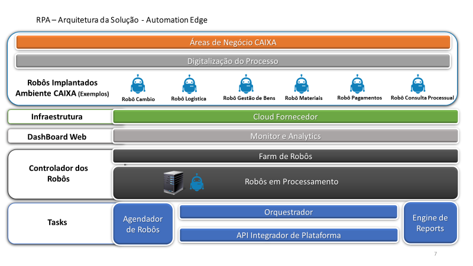
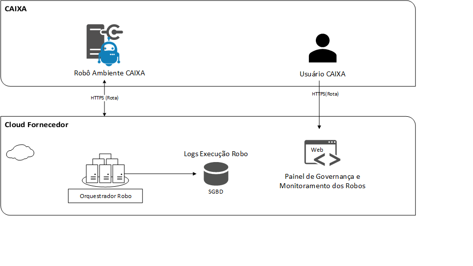
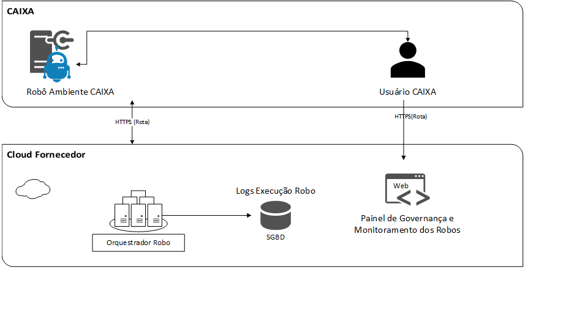
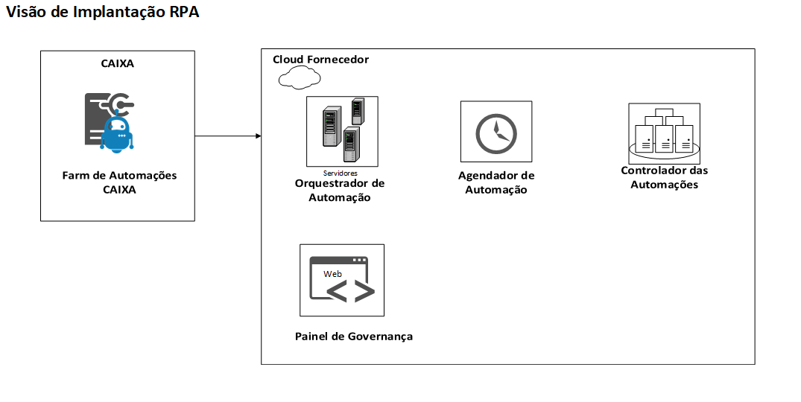
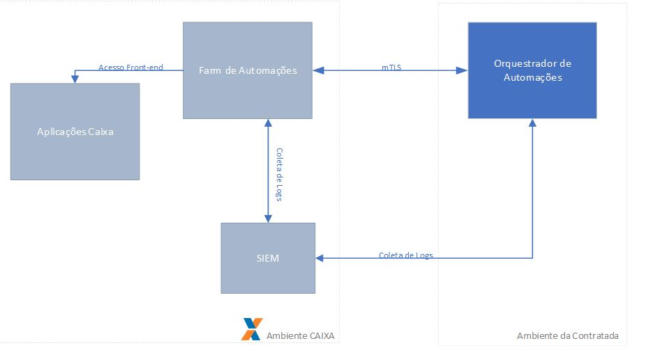
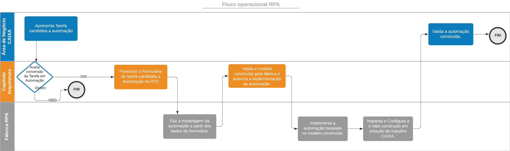

Robotic Process Automation – RPA
Finalidade
Este documento apresenta uma visão geral da arquitetura da solução para Automatização de Processos por robô (Robotic Process Automation – RPA) na CAIXA. Trata-se de solução destinada para automação de tarefas humanas repetitivas, que poderá resultar em robôs assistidos (com participação humana em sua execução) ou robôs não assistidos, que tem sua execução agendada sem necessidade de interferência humana. A solução é composta pelos seguintes módulos: Orquestrador e Painel de Governança dos Robôs hospedados em cloud e os robôs a serem instalados em máquinas Caixa para sua execução.
Escopo
Este documento fornece uma descrição da arquitetura do RPA conforme contrato 6.865/2021.
Representação da Arquitetura da Solução Automation EDGE

A figura acima apresenta a plataforma Automation EDGE que será utilizada pela CAIXA. A estrutura da plataforma de RPA apresenta-se da seguinte maneira:
-
Áreas de negócio identificam processos manuais que serão digitalizados e convertidos em robôs.
-
Os robôs construídos serão instalados como arquivo executável em ambiente CAIXA(FARM) com ROTA(HTTPS) de acesso ao Orquestrador de Automações (CLOUD Fornecedor) e a ferramenta de Monitoramento e Análise dos Robôs.
-
A infraestrutura da solução será disponibilizada em Cloud do fornecedor conforme segue:
-
DashBoard Web: apresenta o monitor dos robôs para os usuários CAIXA controlarem e acompanharem sua execução.
-
Controlador dos robôs: traz a farm de robôs que representa o encapsulamento de todos os robôs em execução.
-
Tasks: que a solução usa para execução dos robôs, como agendador, orquestrador, API Integradora da Plataforma e a Engine de Reports.
-
Studio Automation EDGE: ferramenta usada para o desenvolvimento das automações.
-
-
Dessa forma o controle, gerenciamento das automações e serviços de monitoramento estarão disponíveis na infraestrutura Cloud do Fornecedor.
Representação da Arquitetura de Robôs Não Assistidos

A figura acima apresenta o modelo de robô não assistido, onde não há interação humana durante a execução da automação.
O robô é instalado no servidor farm em ambiente CAIXA e comunica-se com a Cloud do fornecedor através de protocolo de comunicação https, sendo executado no horário agendado por meio do orquestrador;
Os logs dessa execução devem ser gravados no banco de dados da plataforma Automation Edge.
A plataforma possui painel de Governança e Monitoramento dos Robôs acessado via web, com informações sobre a execução e logs para os usuários CAIXA autorizados.
Representação da Arquitetura de Robôs Assistidos

A figura acima representa o modelo de robôs assistidos, que possuem interação com usuário CAIXA em uma ou mais etapas de sua execução, seja para validação de informações, tomada de decisão e demais situações que necessitem de participação humana durante a execução.
O robô será executado em horário agendado pelo orquestrador ou a partir de uma ação do usuário CAIXA para inicializar o robô via terminal;
Os logs da execução são gravados no banco de dados da plataforma Automation Edge;
A plataforma oferece um painel de governança acessado via web com informações sobre a execução e logs para os usuários CAIXA autorizados.
Metas e Restrições de Arquitetura
A Plataforma será disponibilizada em CLOUD no Fornecedor;
As automações, arquivos executáveis em formato proprietário para ambiente Windows.
O acesso ao ambiente do fornecedor ocorre por ROTA (HTTPS);
O ambiente em CLOUD do fornecedor deverá prover mecanismos que minimizem a ocorrência de falhas visando maior qualidade e evitando a indisponibilidade, desabilitando a execução das automações, como monitoramento de servidores e, balanceamento de carga (Load Balance);
O ambiente de execução em cloud deverá estar disponível 24h por dia;
O ambiente em CLOUD deve possuir tratamento de log para auditorias,
O projeto do RPA deverá trabalhar com o conjunto, abaixo descrito de tecnologias:
-
Studio de Desenvolvimento de Automações (CLOUD)
-
Orquestrador de Automações (CLOUD)
-
Controlador de Automações (CLOUD)
-
Agendador (Scheduler) de Automações (CLOUD)
-
Painel de Governança das Automações Web (CLOUD)
-
Automações (Execução em Máquinas CAIXA)
A equipe do RPA (CAIXA e CONTRATADA) deverá resguardar para que não haja degradação do ambiente operacional CAIXA (como por exemplo, mas não limitado a: quantidade de requisições para execuções simultâneas, movimento diário de execução etc.) na elaboração de propostas de automatizações.
Quando o fluxo de automatização envolver sistema legado, o arquiteto CAIXA da comunidade envolvida deverá participar da elaboração da proposta.
É vedada a utilização em qualquer etapa de automatização de processos por robô o acesso a solução tecnológica que não esteja aderente a diretriz do MN OR213, a qual define que o desenvolvimento, a manutenção e a produção de sistemas na CAIXA competem exclusivamente à VITEC.
Visão de Implantação

Infraestrutura
| PLATAFORMA TECNOLÓGICA | |
|---|---|
| Servidores | · Máquina física ou virtual com sistema operacional Windows Server 2008/2012 R2 x64 ou mais recente · 2 Cores ou SUPERIOR · 12GB de RAM ou SUPERIOR · HD 80GB ou SUPERIOR · Framework .NET 3.5 SP1 e 4.5 · Criação de usuário de serviço para sistema operacional, acesso a sistemas, quando pertinente na etapa de modelagem da automação. · Serão 08 agentes instalados sendo possível a instalação de 02 agentes por servidor · 2 usuários de serviço por servidor |
| Serviço Email(Opcional) | Exclusiva contendo um dos seguintes requisitos: · Exchange · POP3 · SMTP · Office 365 |
| Serviços WEB | Rota via protocolo HTTP para Cloud Fornecedor: https://ondemand.automationedge.com, https://t3.automationedge.com e https://license.sahipro.com VPN para instalação e configuração das máquinas |
| Localização geográfica e departamental dos CLIENTES | Nacional Internet e Intranet |
Ambiente de DESENVOLVIMENTO
| Ambiente Desenvolvimento | |
|---|---|
| Linguagens de programação e ferramentas de desenvolvimento | Studio RPA de Desenvolvimento (linguagem proprietária) |
| Gerenciamento de versões do sistema | (RTC) RTC de cadastro da demanda deve conter arquivo de modelagem do robô |
Segurança
Auditoria
A plataforma deverá gerar e armazenar, pelo menos, logs de:
- Acesso de usuários previamente autorizados na solução em cloud do fornecedor e com a possibilidade de separação em grupos;
- Inclusão, alteração, consulta e deleção de automações;
- Inclusão, alteração, consulta e deleção de agendamentos;
- Execução de automações.
Usuários
A plataforma deverá segregar de forma bem clara dois tipos de usuários: usuários robôs e usuários da solução.
Usuários robôs são utilizados nas automações para acesso aos sistemas/aplicações CAIXA e, por isso, deverão estar cadastrados nas bases internas com perfil de acesso adequado para cada aplicação que será acessada, seguindo o padrão “cXXXXXX”.
As credenciais de usuário robôs de produção devem ser diferentes das credenciais de usuários robôs de não produção, evitando a descoberta de senhas de acesso de aplicações em produção.
As credenciais de usuários robôs de produção serão incluídas pela área de segurança da CAIXA na solução contratada, devendo permanecer criptografada após a inclusão, durante o ciclo de vida da automação.
Usuários da solução, ou seja, usuários que são utilizados para acesso na plataforma RPA do fornecedor para desempenhar as funções de desenvolvimento de automações, publicação de automações, agendamento e execução de automações, bem como consulta e execução de outras funcionalidades na plataforma.
Usuários de solução serão cadastrados na própria plataforma RPA do fornecedor, incluindo a definição/associação de perfis de acesso.
A concessão de acessos à plataforma RPA será de responsabilidade da solução da contratada e será somente será realizada mediante a autorização da CAIXA registrada em solução definida.
As automações deverão reproduzir o acesso de usuários comuns da CAIXA na camada de apresentação das aplicações, não estando autorizado, portanto, acessos diretamente na camada de aplicação e dados.
Necessidades de exceções deverão ser avaliadas e autorizadas, previamente, pela SUART e GECMI.
Arquitetura de Segurança

A comunicação entre o farm de automações (ambiente CAIXA) e a solução de orquestração (ambiente do fornecedor) deverá ser criptografada com autenticação TLS mútua (mTLS), com no mínimo a versão 1.2.
O uso do SIEM deverá ser avaliado pela área de monitoração a fim de identificar a prioridade de início da coleta de logs e, ainda, os possíveis casos de uso para geração de alertas de segurança.
Qualidade
Manutenibilidade
Para atender os padrões manutenibilidade, todos as automações serão construídas seguindo padrões de desenvolvimento do RPA.
Confiabilidade
A solução será implantada contemplando política de tolerância a falhas além da relação de confiabilidade entre os servidores cloud responsáveis por hospedar tanto os componentes responsáveis por prover os serviços quanto as automações;
Tratamento de erros
A solução será dotada de mecanismo de tratamento de erros tais como logs relatando comportamentos anormais e trilha de execução.
Modularidade
A arquitetura definida modulariza a solução da seguinte forma: Os robôs ficam instalados em máquinas CAIXA e a infraestrutura da solução disponível em Cloud do Fornecedor. Esse modelo dá flexibilidade a CAIXA evitando consumo excessivo de recursos.
Desempenho
A arquitetura foi proposta de maneira a possibilitar o melhor aproveitamento dos recursos de infraestrutura da CAIXA e a obtenção da escalabilidade do ambiente em nuvem garantindo assim o desempenho adequado.
Fluxo Operacional RPA

A imagem acima apresente o Fluxo por meio do uso do RPA – Robotic Process Automation. O escopo de tarefas manuais que são candidatas a solicitação de avaliação de possível automatização contemplam (não limitada):
-
Automação de atividades manuais repetitivas;
-
Tarefas de execução manual com risco de erros;
-
Atividades manuais que tenham elevado custo, seja por exigir a execução por diversos empregados ou volume de horas consumido em sua execução;
-
Atividades de backoffice que geram relatórios, consultam dados na web, inclusão de dados em sistemas, realizam conferência de planilhas, conciliação de informações, são todas candidatas a automatização.
SOLICITAÇÃO DE AUTOMATIZAÇÃO DE ATIVIDADE
A área de negócio apresenta a tarefa candidata a automação a sua comunidade vinculada.
O capítulo de arquitetura atráves do arquiteto da comunidade vinculada a área de negócio de tarefa candidata avalia a pertinência de conversão da tarefa manual em automação.
Após avaliação a comunidade vinculada a área de negócio da tarefa candidata, solicita por meio de ferramenta de Solicitação de Serviços definida pela CAIXA o início do processo de construção de automação.(GID.CAIXA).
Após preenchido o formulário, este ficará disponível para tratamento na Área de Desenvolvimento de Aplicativos, que deverá avaliar a pertinência da automatização por uma equipe definida para este fim, na Comunidade Gestora do RPA.
Validada a necessidade de automatização, a equipe da Comunidade Gestora do RPA deverá analisar o custo x benefício da automatização, e após aprovação da viabilidade a necessidade deverá compor a relação de atividades para atendimento (backlog), com a respectiva prioridade.
Deverá ser priorizado o desenvolvimento das automatizações que resultem em maior disponibilização de recursos humanos e maior ganho financeiro à CAIXA.
DESENVOLVIMENTO DO ROBÔ
A equipe da Comunidade Gestora do RPA deverá analisar a esteira de desenvolvimento em andamento, verificar quais atividades (robôs) estão em desenvolvimento e definir a relação de robôs a serem entregues.
A equipe da Comunidade Gestora do RPA deverá definir a lista de atendimento e solicitar o desenvolvimento das atividades à equipe da empresa CONTRADA.
As atividades de modelagem, implementação, implantação, monitoramento e suporte das Automatizações serão de execução exclusiva da CONTRATADA.
Após a modelagem da automação, a equipe do capítulo de arquitetura valida o modelo criado e autoriza a implementação da automação.
TESTES E HOMOLOGAÇÃO
A equipe da Comunidade Gestora do RPA deverá analisar a esteira de desenvolvimento em andamento e monitorar o desenvolvimento dos robôs.
Esta equipe deverá identificar quais são os robôs que estão em fase de construção final e acionar os gestores demandantes para efetuar os testes necessários.
IMPLANTAÇÃO EM PRODUÇÃO
Após a homologação pela área de negócio das automatizações, deverá ser definida a data de implantação.
A equipe da Comunidade Gestora do RPA, juntamente com a equipe da empresa CONTRATADA de desenvolvimento dos robôs deverão acompanhar e monitorar as implantações das automatizações.
Deverão ser divulgados aos usuários as datas de implantação, o nome das automatizações, os horários de execução e os resultados observados.
De posse dessas informações, a equipe da Comunidade Gestora do RPA deverá gerar os relatórios do total de robôs implantados, horários de execução e usuários que utilizam os serviços.
MONITORAÇÃO E GERAÇÃO DE INDICADORES
Após a implantação das automatizações, deverão ser gerados pela Comunidade Gestora do RPA os relatórios de acompanhamento e controle do desempenho das automatizações, com apresentação de indicadores que possam apontar a situação das automatizações (desempenho, possíveis erros e problemas de execução, tempos de execução).
REFERÊNCIAS
- TE227 - DIRETRIZES PARA UTILIZAÇÃO DE NUVEM PUBLICA
- OR016 - TRATAMENTO DA INFORMAÇÃO
- OR213 - DIRETRIZES DE GOVERNANÇA DE SOLUÇÕES DEPARTAMENTAIS
Definições, acrônimos e abreviações
| Termo | Definição |
|---|---|
| RPA | Robotic Process Automation – Automatização de Processos por robô |
| GEPAS | GN Padrões de Soluções TI |
| SUDEA | SN Soluções de TI, Núcleo A |
Histórico da Revisão
| Data | Versão | Descrição | Autor |
|---|---|---|---|
| 28/10/2021 | 1.0 | Criação do documento | SUART12 |
| 03/05/2022 | 2.0 | Inclusão de referências e alteração de Metas e Restrições de Arquitetura | SUART12 |
| 28/03/2024 | 2.1 | Alteração de referência manual normativo que trata das diretrizes de soluções departamentais | SUART |